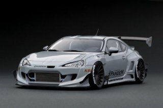

Generasi Terbaru Toyota GT86 dan Subaru BRZ Bakal Lebih Ngebut

Tokyo - Dua produsen Jepang, Toyota dan Subaru sudah menjalin kerjasama cukup lama, dan dibuktikan pada 2012 dengan melahirkan mobil sport bersama-sama yakni Toyota 86 dan Subaru BRZ.
Kini keduanya akan merilis generasi kedua Toyota 86 dan Subaru BRZ, untuk mendongkrak penjualan yang lagi agak loyo. Seperti Dikutip autocar, Senin (13/1/2020) generasi terbaru Toyota GT86/Subaru BRZ tengah dipersiapkan dan dikatakan akan lebih ngebut dibandingkan generasi sebelumnya.
Toyota akan melakukan rebranding 86 menjadi GR86, jika detikers mengenal GR maka akan tahu kalau mobil akan menjadi lebih sporty berkat sentuhan divisi balap Toyota, Gazoo Racing (GR). Sebelumnya Yaris dan Supra juga mendapat embel-embel GR, jadi wajar saja kalau 86 bakal mendapat embel-embel serupa.
Prediksi juga mengatakan kedua mobil dari Toyota dan Subaru ini akan mengusung platform milik Toyota yakni TNGA (Toyota New Global Architecture). Sementara Subaru akan kebagian menyuplai mesin Boxer yang lebih besar dengan kapasitas 2.4 liter dan telah diselipkan pada Ascent, Legancy dan Outback.
Dua generasi terbaru mobil ini tentu akan mempertahankan karakteristik mobil yang lincah dan handling baik. Tak hanya performa Toyota dan Subaru juga sepakat untuk meningkatkan daya tarik tampilan serta interior yang kerap mendapat kritikan.
Perubahan sebanyak itu tentu akan menyebabkan adanya peningkatan harga. Tentunya Toyota akan menghitung besaran yang pas agar tidak menyinggung harga dari Toyota Supra GR.